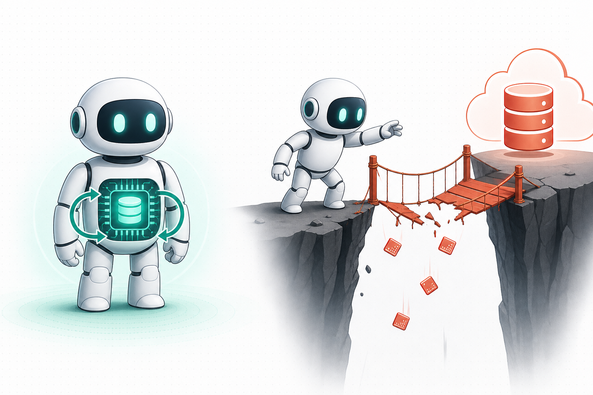
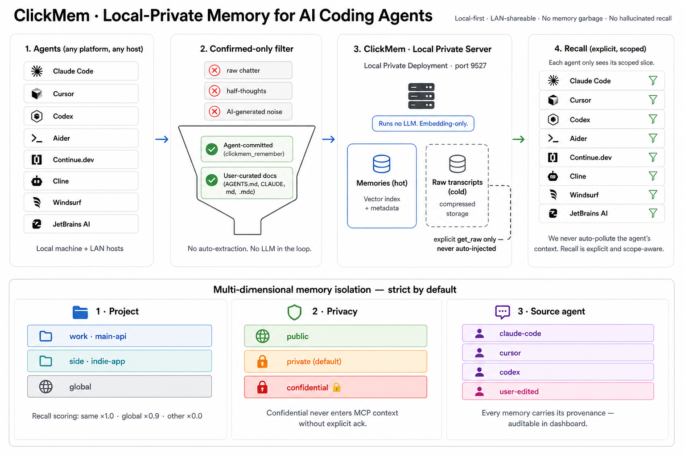

In-Process Analytics with chDB
Auxten Wang · Technical Director @ ClickHouse · Creator of chDB
PyCon Singapore 2026 · 20-25 min
@auxten · auxten.com
The agent tried a migration path, hit a production constraint, and found the correct workaround.
A new task asks for a similar fix. The agent reads the prompt, but not yesterday's decision.
It repeats the failed plan, burns tool calls, and only recovers after more logs and retries.
The problem is not that the model is dumb.
The right context was not queryable at the right time.

Recall means: before each agent step, find the few facts that matter now.
It finds text that is semantically close to the current task.
Project scope, privacy, status, tags, conflicts, and pinned decisions matter.
What worked last time? Which memory was edited? Which run failed?
Vector search is just an index.
Agent memory is the whole database around it.
ClickHouse is an open-source database for fast SQL over large tables: logs, events, metrics, traces, and product data.
It stores data by column, so scans, filters, joins, and aggregations over millions or billions of rows stay fast.
It also gives you a serious query engine: SQL, JSON, arrays, text search, and vector distance functions.
Trusted in production by teams building AI, developer tools, infrastructure, and commerce.
Think of it as the engine you use when asking questions over lots of data is the hot path.
chDB embeds the ClickHouse analytical engine directly into your Python process.
chs.Session("./agent") gives the agent local tables on disk.
pip install chdb, import it, and query local context immediately.
pip install chdb
from chdb import session as chs
sess = chs.Session("./agent_context")
sess.query("SELECT count() FROM file('events.parquet', Parquet)")
SQLite-level deployability, ClickHouse-level analytical power.
| Tool | Great at | Gap for agent memory |
|---|---|---|
| SQLite | tiny embedded state, in the stdlib | row-store; no columnar scan, vector distance, or remote federation |
| pandas | in-memory analysis | dies past RAM; can't query a remote file you never loaded |
| DuckDB | embedded analytical SQL (closest) | thinner data-format support; no mature managed cloud |
| Chroma / pgvector | similarity search | similarity only; can't filter + join + aggregate + audit in one query |
chDB's edge: one ClickHouse SQL surface from laptop to cluster, with vectors and federation built in. Use the others when they're enough.
Files, DataFrames, Arrow tables, JSON logs, and persistent local memory tables.
S3, HTTP, Postgres, MySQL, MongoDB, and ClickHouse Cloud via table functions.
Rows with project, tags, privacy, status, embeddings, and event history.
The point is not "more connectors". The point is one query surface for context.
| Column | Example | Why the agent needs it |
|---|---|---|
| content | Use chDB file() for local Parquet checks. | the fact to recall |
| project_id | auxten/chdb | scope the memory |
| tags | ["parquet", "fidelity"] | structured filtering |
| status | active / conflicted | avoid stale beliefs |
| pinned | true / false | canonical decisions rank first |
| embedding | [0.02, -0.11, ...] | semantic recall |
Once memory is a row, recall can use SQL: filters, joins, vector score, and history.
"Use Poetry for this repo." Later the repo standard changes to uv.
The old row becomes conflicted; the revised row becomes the active memory.
ClickMem is explicit-only: raw transcripts are cold storage, not automatic prompt injection.

Agent adapters + local server + chDB backend. Six tables: memories, history, projects, blacklist, raw transcripts, events.
SELECT
m.id,
m.content,
1 - cosineDistance(m.embedding, {query_vec:Array(Float32)}) AS meaning,
count(e.id) AS used_before
FROM memories AS m
LEFT JOIN events AS e
ON e.memory_id = m.id AND e.project_id = m.project_id
WHERE m.project_id = {project:String}
AND m.status = 'active'
AND hasAny(m.tags, {tags:Array(String)})
GROUP BY m.id, m.content, m.embedding, m.pinned
ORDER BY m.pinned DESC, meaning DESC, used_before DESC
LIMIT 8;
This is the whole point: recall is a database query, not a prompt concatenation trick.
| Arm | p95 | p99 | Fail % |
|---|---|---|---|
| local | 1.7 ms | 2.8 ms | 0.00 |
| remote @ 0.5% | 93 ms | 450 ms | 0.46 |
| remote @ 2% | 99 ms | 2,000 ms | 1.90 |
| remote @ 5% | 643 ms | 2,000 ms | 4.68 |
Same recall query; the remote arm adds network tax, timeout, and retry behavior.
# Day 1: prototype locally
sess = chs.Session("./agent_brain")
sess.query("SELECT * FROM memories WHERE project_id = 'checkout'")
# Day 100: shared memory or too much data for one laptop
sess.query("""
CREATE OR REPLACE VIEW memories AS
SELECT *
FROM remoteSecure(
'company.clickhouse.cloud:9440',
'agent', 'memories',
'agent_user', '***'
)
""")
# The agent's SQL does not change.
sess.query("SELECT * FROM memories WHERE project_id = 'checkout'")
Local first. Go remote for sharing, sync, or scale — knowing remote reads pay the network cost again.
from chdb import session as chs
sess = chs.Session("./agent_context")
sess.query("CREATE TABLE IF NOT EXISTS memories (...) ENGINE = MergeTree ORDER BY id")
sess.query("INSERT INTO memories VALUES (...)")
sess.query("SELECT content FROM memories ORDER BY cosineDistance(embedding, ?) LIMIT 8")
The full ClickMem project adds lifecycle, conflicts, adapters, dashboard, and ClickHouse backend.